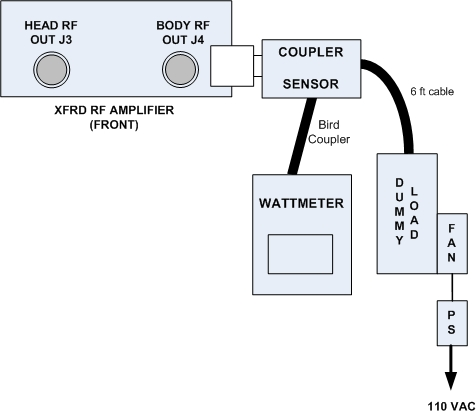
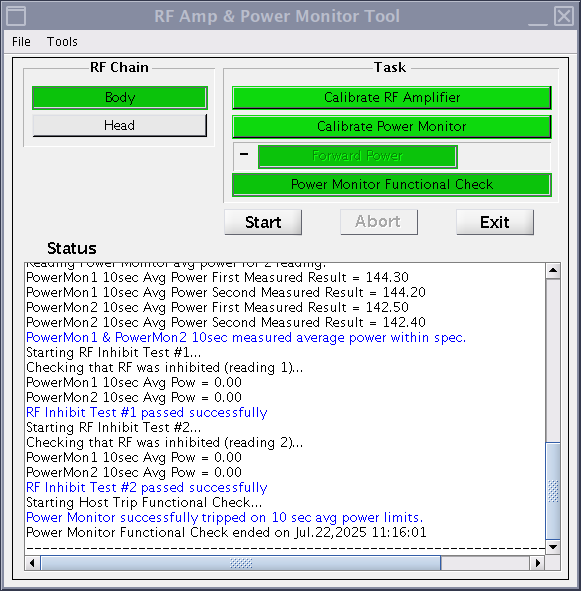

- Object ID: 00000018WHA302C62GYZ
- Topic ID: id_2001440 Version: 9.39
- Date: Oct 29, 2025, 7:47:56 PM
Doing UPM functional check for Body channel
The UPM functional check runs a prescribed scan in the forward power. It compares the measured RF power from the UPM to the expected value stored in the UPM configuration file.
Procedure
- Make sure the RF ENB switch on the Exciter is in the DISABLE (down) position.
- For Body channel, disconnect Body output cable from J4 on the front panel of the RF Amplifier and connect the RF coupler to J4.
Figure 1. Complete Body output Test Setup 
- Set the RF ENB switch to the ENABLE (up) position.
- Press Landmark. Then, advance to scan. A phantom is not needed.
- Start the RF Amp & Power Monitor Calibration tool as follows:
- Make sure that the service key is installed.
- On the Common Service Desktop, from the Calibration menu, select Calibration > Calibration Wizard and select Click here to start this tool.
- Select RF/UPM Cal & Functional Check (Body) and select Click here to start this tool.
- Click OK on the alert asking if the hardware is set up.
- On the Common Service Desktop, from the Calibration menu, select Calibration > RAP and Click here to start this tool.
- In the tool, make the following functional check selections:
Figure 2. RF Amp and Power Monitor (RAP) Tool Functional check selections 
Setting Value Task Power Monitor Functional Check RF Chain Body - Click Start.
- Click Yes when the prompt asks if the hardware setup is correct.
- Review the system prompts as they are shown during test execution. This functional check takes 2 to 3 minutes before any user interaction is required. Functional check tests include: 10-second average power check, RF inhibit test, and short-term average power fault host trip test.
- Look for a dialog box about the UPM tripping and a power trip error message.
- If the UPM does not trip, recheck the calibration connections and repeat the functional check.
- From the CSD, open the error log. Make sure the error log contains the message that the UPM has detected a power fault on Body Short Term Average.
- If the error is shown in the log, the functional test has passed. Click Yes on the dialog box.
- If the test fails, go to UPM troubleshooting.